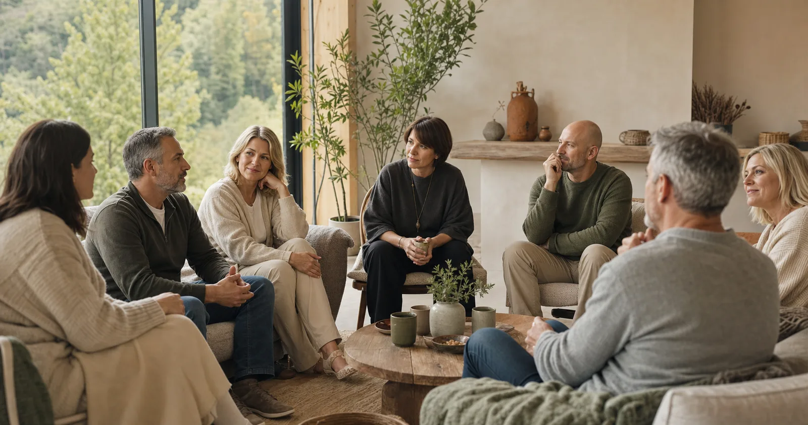

Ресурсні ретрити

Ресурсний ретрит — це два дні, коли можна нарешті видихнути. Без побуту, без поспіху, без звітів. Поруч — психологи й родини, яким не треба пояснювати, як це — виховувати дитину з непростим минулим.
Ми не вчимо «бути кращими батьками». Ми допомагаємо відновити сили — щоб вистачило й на дітей, і на себе.
Як це влаштовано
- 8 зустрічей за рік, кожна — два дні у вихідні, приблизно раз на 1–1,5 місяця
- Якщо вашу сім'ю оберуть, важливо бути на всіх восьми — це цілісний шлях
- Локація: затишний заміський комплекс зі спа серед природи (точне місце повідомимо додатково)
- Усе коштом проєкту: проживання, харчування, програма. Дорогу компенсуємо
- Приїхати можна вдвох — програма розрахована на обох батьків
Що на ретриті
Робота з психологами, практики відновлення, арт-терапія, групи підтримки, тепле спілкування й трохи тиші для себе. Усе — у безпечному, дбайливому форматі.
Хто може подати заявку
Прийомні сім'ї та дитячі будинки сімейного типу (ДБСТ).
Як відбираємо
За відповідями в анкеті ми запрошуємо родини, яким підтримка потрібна найбільше. Анкета конфіденційна — її не бачать соціальні служби, а для дослідження дані знеособлюються. Заявки приймаємо до 1 жовтня 2026.
Як подати заявку
Заявка на ретрит подається через анкету-заявку: у ній ви відповідаєте на кілька запитань про свою сім'ю та свій стан і зазначаєте, що хочете взяти участь у ретриті. Так ми відбираємо родини, яким підтримка потрібна найбільше. Заповнення займає 15–20 хвилин, усе конфіденційно.
Часті запитання
Хто може подати заявку?
Прийомні сім'ї (ПС) і дитячі будинки сімейного типу (ДБСТ). Це наша цільова група.
Скільки коштує участь?
Нічого. Участь повністю безоплатна: проживання, харчування та всі активності — коштом проєкту, а вартість дороги ми компенсуємо.
Як часто відбуваються ретрити і скільки їх?
Упродовж року — 8 дводенних ретритів у вихідні, приблизно раз на 1–1,5 місяця.
Якщо нас оберуть, чи треба відвідувати всі 8?
Так. Програма побудована як цілісний річний цикл відновлення, де кожен ретрит спирається на попередній, тому важливо бути на всіх 8 зустрічах.
Як відбувається відбір?
За результатами анкети. Ми запрошуємо сім'ї, які демонструють найвищий рівень виснаження, з урахуванням регіонального балансу. Усього — 10 сімей (20 учасників).
Чи можуть приїхати обоє з подружжя?
Так, програма розрахована на обох партнерів (10 сімей = 20 учасників).
З ким залишити дітей на час ретриту?
Догляд за дітьми на час ретриту організовує сама родина. Якщо у вас особлива ситуація — зазначте це в анкеті (поле «особливі потреби»), і ми обговоримо можливі рішення індивідуально.
Що відбувається на ретриті?
Робота з психологами, арт-терапія, практики управління стресом, групи взаємопідтримки, зустрічі з експертами — формат відновлення, а не навчання чи звітування.
Де проходитимуть ретрити?
У затишному заміському комплексі зі спа серед природи. Точну локацію ми повідомимо додатково, заздалегідь до зустрічей.
Коли відбуватимуться ретрити?
Графік 8 зустрічей ми сформуємо й узгодимо з відібраними сім'ями. Точні дати повідомимо додатково — орієнтовно одна зустріч раз на 1–1,5 місяця протягом року.
До якого числа можна подати заявку?
До 1 жовтня 2026 року.
Чи безпечно ділитися особистим в анкеті?
Так. Анкета конфіденційна: ваші відповіді не передаються соціальним службам, а для дослідження знеособлюються. Контактні дані використовуються для зв’язку з вами з організаційних питань дослідження та, якщо ви подасте заявку на ретрит, щодо відбору й участі в програмі.
Що як нас не оберуть цього разу?
Усі сім'ї, яких ми не змогли запросити одразу, потрапляють до резервного списку (на випадок змін у складі учасників). Окрім того, кожна сім'я отримує доступ до матеріалів підтримки — порад психологів, технік відновлення та подкасту «Хочу на ручки».